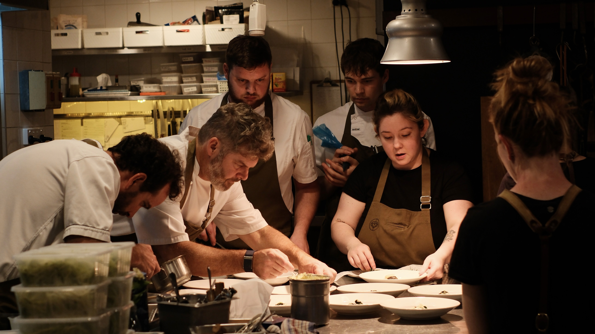

Our Philosophy
We create social architecture through immersive spatial brand activations where hospitality, design and storytelling converge to help brands build cultural relevance, deepen audience connection and cultivate community.
Each activation sits at the intersection of craft, culture and collaboration, placing brands within curated environments alongside creatives and local producers, positioning them in the right rooms, networks and conversations.
Through spatial design and intentional programming, we transform everyday environments into culturally resonant brand moments where food becomes narrative, design becomes atmosphere and place becomes memory.
Connection & Soul
Every gathering is designed to foster connection with the people, space, partners, brands, and the city.
Intentional Design
Every detail, from the experience to the table setting to the conversation, is curated with purpose. Design in journey and aesthetics is our language for human experience.
Integrity in craft
We honour the craftsmanship behind produce, dishes, service, and hospitality. Every collaborator, partner, and association is selected with alignment and consideration.
Depth over scale
We prioritise resonance over reach. Our gatherings are designed to build lasting connections between people, brands, and communities, fostering genuine loyalty that extends beyond the event.
Cultural contribution
Through collaboration with chefs, artisans, and creative partners, we contribute to the evolution of Melbourne's cultural identity and inspire connection as a shared value across communities.